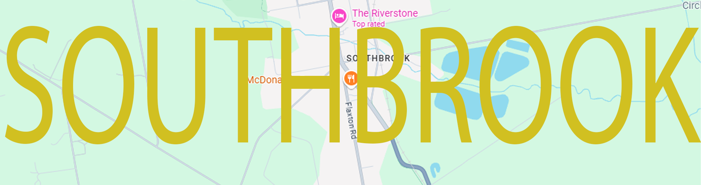

What is Southbrook?
Southbrook is a small suburb located in the south of
Rangiora, within the Waimakariri District Positioned about 30 minutes north of the biggest city in South Island
being
Christchurch, Southbrook has slowly transformed from a semi-rural area into a growing residential and light
industrial area. The area has a blend of housing, local businesses, and community facilities, including
schools (high school and primary school) and some sports facilities, catering to everyone. While closely
connected to Rangiora’s wider
urban services, Southbrook maintains its own place with a quieter, more peaceful atmosphere. Its location is
near a major transport route, including State Highway 1 and the Main North Line railway, that supports locals.
With ongoing development, Southbrook contributes to
the wider growth of the Waimakariri District.
Map of Southbrook